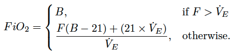

More details on Finer:
The 'Finer' model implements the equation derived by Finer et al., Pediatr Pulmonol 1996;21(1):48-51 with modifications by Dr Michael Hewson, NICU, Wellington Hospital. These include the use of an oxygen blender altering the cannula oxygen concentration, \(B\) and enforcing a conditional statement when the gas flow exceeds minute ventilation, \(\dot V_E\) :
Here, \(\dot V_E = V_T\times R =5.5\times W\times R\), with tidal volume \(V_T\) (mL/kg), respiratory rate \(R\) (breaths/min), and weight \(W\) (kg).
In the construction of this formula, Finer et al. assume a tidal volume \(V_T\) of 5.5 mL/kg.
The use of this model for flow rates above 200 cc/min is not recommended since the Finer model was not made or validated for higher low flow rates.